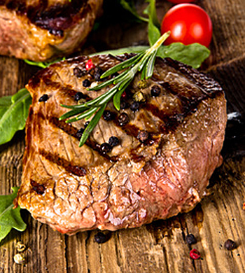

We want to do our part to ensure that our local communities continue to have access to amazing meals and healthy food. All workers are fully equipped with appropriate mitigation equipment like hand sanitizer, gloves and masks to protect you and themselves.
We can't express the gratitude we have towards you, our loyal guests, who continue to support us during these uncertain times.
The Seven Stars Inn is the original Chester County steakhouse, featuring overly generous portions of the finest beef, veal and seafood served in a gracious white table cloth atmosphere.
The cocktail lounge is warm and inviting, and the well thought out wine list includes a broad spectrum of varietals and geographic origins.
Family friendly, the Seven Stars has a great Young Adults Menu that scales down the size of their serving and price of their offerings.
Dinner only is served at the Seven Stars and the inn is closed on Mondays. Credit cards are accepted and reservations are suggested.